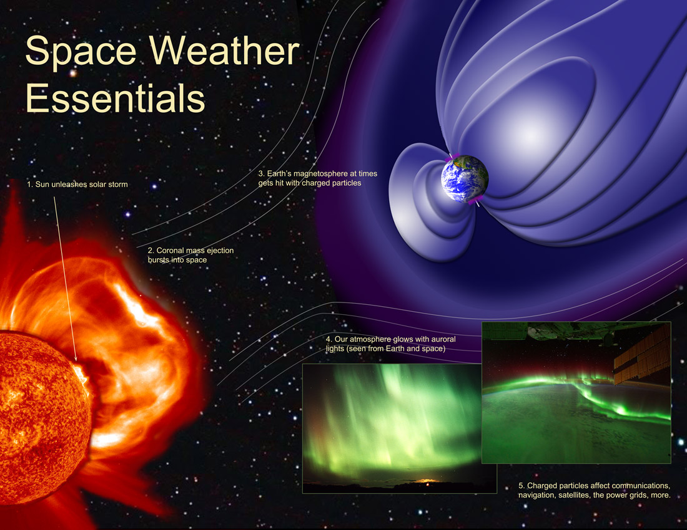
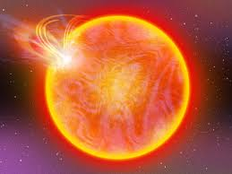
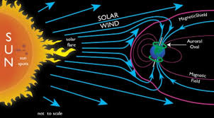
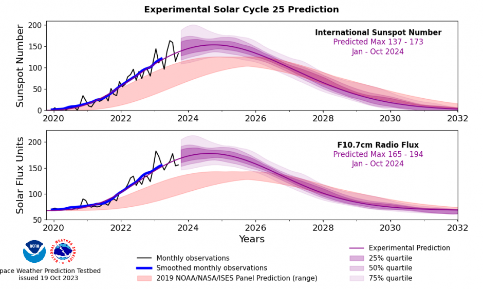

Solar storms can significantly impact our planet and technology. Understanding these phenomena is crucial for safety and preparedness.
In May 2024, a series of intense solar storms affected communication systems, power grids, and even led to beautiful auroras visible in unusual locations!
Solar storms, also known as geomagnetic storms, are disturbances in the Earth's magnetosphere caused by solar wind and solar flares from the Sun. These storms can affect various systems on Earth, including:
What Causes Solar Storms?

Solar storms originate from the Sun's surface, where explosive events release energy and charged particles into space. The main contributors to solar storms include:
Solar Flares: Sudden bursts of radiation from the Sun's surface.
Coronal Mass Ejections (CMEs): Large expulsions of plasma and magnetic field from the Sun’s corona.
High-Speed Solar Wind Streams: Streams of charged particles that can interact with Earth’s magnetic field.
Effects of Solar Storms

Solar storms can have various impacts, including:
Communication Disruptions: Solar storms can interfere with radio signals and GPS navigation, leading to communication failures.
Power Grid Failures: Intense solar activity can induce currents in power lines, potentially damaging transformers and causing blackouts.
Auroras: Solar storms can lead to stunning auroras visible at lower latitudes than usual.
Satellite Damage: Increased radiation can harm satellites in orbit, affecting their operation and lifespan.
How to Stay Prepared

Staying informed about solar storms is essential. By signing up for alerts, you can receive notifications about upcoming solar activity and take necessary precautions. Here are some tips to stay prepared:
Keep a battery-powered radio and extra batteries in case of power outages.
Prepare an emergency kit with essential supplies like food, water, and first aid items.
Stay informed through reliable sources about solar storm predictions.
Limit electronic device use during severe solar storms to protect sensitive equipment.
Learn More
For more detailed information on solar storms and their impacts, explore and check out the latest research from NASA.
Sign Up for Solar Storm Alerts
Stay informed about solar storms and their potential impacts on Earth. Register now to receive timely alerts and updates directly to your phone!
Thank you for registering! You will receive alerts about solar storms.
Solar Storm Forecast

Trends from 2020 to 2030
The chart above illustrates the trends in the International Sunspot Number and Radio Flux from 2020 to 2030. Sunspots are indicators of solar activity and can influence geomagnetic storms on Earth. Monitoring these trends helps predict potential solar storms and their effects on our technology and environment.
Stay informed about solar activity and its impacts!
Solar Storm Quiz Game Prototype
Prototype Overview
This is a prototype of our Solar Storm Quiz Game designed to test your knowledge about solar storms, particularly the events of May 2024. The quiz will feature multiple-choice questions, true/false statements, and fun facts about solar activity.
Participants will learn about the effects of solar storms on Earth and how to stay informed. The game aims to make learning fun and engaging!
Gameplay Features
Interactive multiple-choice questions
Immediate feedback on answers
Educational content for each question
Fun and engaging user interface
Watch Our Animated Video on Solar Storms
Understanding Solar Storms
Our animated video provides a captivating overview of solar storms and their impacts on Earth. Dive into the science behind solar activity and see how these events can affect our technology and daily lives.
Stay informed and prepare for the next solar storm!
.png)
.png)
.png)
.png)